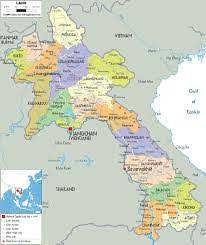

Laos

Thông tin cơ bản:
Khí hậu
Lào có khí hậu nhiệt đới gió mùa do nằm chủ yếu ở đới khí hậu nhiệt đới. Khí hậu nhiệt đới gió mùa và khí hậu cận nhiệt đới ẩm cũng là đặc điểm ở một số nơi. Mùa mưa riêng biệt và kéo dài từ tháng 5 đến tháng 11, tiếp đến là mùa khô kéo dài từ tháng 12 đến tháng 4. Theo truyền thống địa phương, một năm có ba mùa là mùa mưa, mùa lạnh và mùa nóng, do hai tháng cuối của mùa khô nóng hơn đáng kể so với bốn tháng trước đó. Thủ đô của Lào là Vientiane, các thành thị lớn khác là Luang Prabang, Savannakhet và Pakse.
Du lịch
Lào giàu tài nguyên thiên nhiên, song phải nhập khẩu dầu khí. Luyện kim là một ngành quan trọng và chính phủ hy vọng thu hút đầu tư nước ngoài để phát triển các mỏ than, vàng, bô xít, thiếc, đồng và kim loại có giá trị khác. Ngoài ra, nguồn tài nguyên nước phong phú và địa hình núi non cho phép Lào sản xuất và xuất khẩu thuỷ điện với số lượng lớn. Lào xuất khẩu điện sang Thái Lan và Việt Nam.
Ngành du lịch Lào tăng trưởng nhanh chóng, đạt gần 4,7 triệu du khách quốc tế trong năm 2015, đông nhất là khách Thái Lan (2,32 triệu), Việt Nam (1,19 triệu) và Trung Quốc (0,51 triệu). Du lịch đóng góp 679,1 triệu USD cho GDP vào năm 2010, dự tính tăng lên 1,5857 tỷ USD vào năm 2020. Năm 2010, 1/10,9 số công việc là trong lĩnh vực du lịch. Thu nhập xuất khẩu từ du khách quốc tế và hàng hoá du lịch dự kiến tăng lên 484,2 triệu USD vào năm 2020, chiếm 12,5% xuất khẩu. Luang Prabang với văn hoá Phật giáo và kiến trúc thuộc địa, cùng tổ hợp đền cổ Khmer Wat Phu là các di sản thế giới UNESCO, Cánh đồng Chum cũng được đề cử.